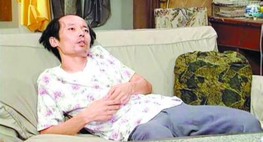

<!DOCTYPE html>
<html>
  <head>
    <meta charset="utf-8">
    <meta name="viewport" content="width=device-width, initial-scale=1.0, maximum-scale=1.0, user-scalable=0">
    <link rel="stylesheet" href="http://cdn.bootcss.com/font-awesome/4.6.3/css/font-awesome.min.css">
    <link rel="stylesheet" href="css/index.css">
    <title>百科信息详情</title>
  </head>
</html>
<body class="basicbg baike-detail">
  <header class="topbar"><a href="#" class="fl"><i class="fa fa-angle-left"></i></a><a href="#" class="fr"><i class="fa fa-user"></i></a>
    <p>百科信息</p>
    <div class="fr"></div>
    <div class="clear"></div>
  </header>
  <div class="container">
    <div class="baike-title">
      <h3>“葛优躺”健康吗？</h3>
      <p>百科信息</p>
    </div>
    <div class="baike-main">
      <div class="img-wrapper"></div>
      <p>流行网络的“葛优躺”纷纷受到众多人的效仿，虽然看起来很舒服，但是越舒服的姿势可能伤你越深。</p>
      <h4>“葛优躺”为什么会舒服</h4>
      <p>葛优躺接近于仰躺，用不到我们的腰部肌肉，同时脖子也能靠在沙发上，脖子部位的肌肉也在“放假”。用不到肌肉，人自然就感觉放松了。</p>
      <h4>“葛优躺”的危害</h4>
      <p>当我们以“葛优躺”的姿势躺着的时候，肌肉和韧带都放松了，人头颅的重量将被转移到颈椎上，从而给颈椎带来压力。长期保持这个姿势容易导致脊椎畸形，严重时还可能致瘫。</p>
      <div class="return-btn-box"><a href="#" class="return-btn">返回</a></div>
    </div>
  </div>
</body>